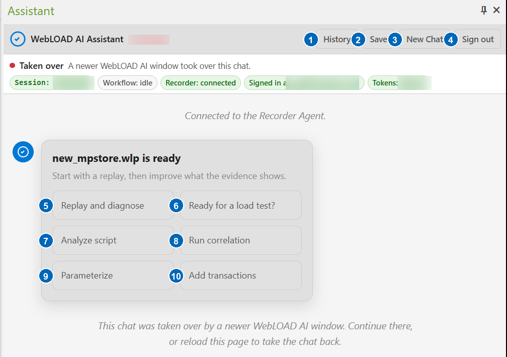
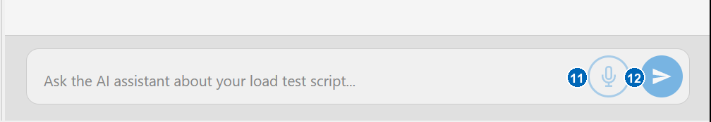
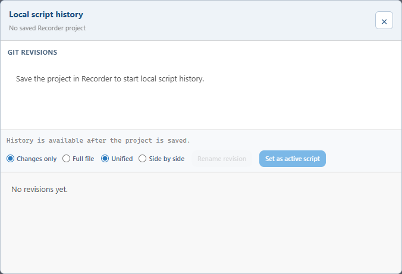

Getting Started
Prerequisites
Before you begin, make sure that:
- WebLOAD 14.0 or later is installed, including the WebLOAD Recorder.
- The WebLOAD AI Recorder Agent is installed on the same machine. The
agent is delivered as its own installer (
WebLOAD-AI-Setup-<version>.exe) and runs as a Windows service in the background. Run the installer as an administrator. - Your organization has purchased a WebLOAD AI Assistant package. The AI Assistant is a paid add-on, licensed separately from WebLOAD — see Introduction.
- You have a WebLOAD AI account — an email and password provided by your administrator from your organization's purchased seats — and the machine has internet access.
Opening the chat
Open the WebLOAD Recorder. The assistant lives in the AI Assistant docking pane inside the Recorder window. If the pane is not visible, enable it from the Recorder's View menu.
Main window controls
The buttons in the Assistant pane change with the active script and workflow. The example below shows the actions offered when a recorded script is open. Account-specific values in the status row have been obscured.

- History — opens the local revision history for the active script. You can compare revisions, rename a revision label, or restore an earlier revision after confirmation.
- Save — downloads troubleshooting information; it is not the command for saving the Recorder project. The preferred download is a diagnostic package containing the chat transcript, logs, current script, pending changes, replay information, and environment details. If that package cannot be created, the assistant downloads the chat transcript instead. An empty chat has nothing to save. Share either download only through approved support or QA channels.
- New Chat — starts a fresh conversation and requests removal of the previous chat's local script history.
- Sign out — signs out of WebLOAD AI and clears the saved cloud session and tokens from the local Recorder Agent.
- Replay and diagnose — runs the current script, collects replay evidence, and explains the first failure. A proposed repair still requires approval.
- Ready for a load test? — performs a read-only readiness assessment and lists verified strengths, missing evidence, and recommended next steps.
- Analyze script — summarizes the current script's requests, flow, and relevant structure without changing it.
- Run correlation — searches recorded evidence for dynamic values and proposes supported correlation rules for review.
- Parameterize — audits hardcoded and repeated values. When suitable changes are needed, it may propose parameters and data sources.
- Add transactions — audits the current transaction boundaries and reports missing or misplaced coverage. Ask it to apply a specific recommendation to receive a proposal for review.
The status chips above the conversation are indicators, not buttons. They show the current chat session, active workflow, Recorder connection, signed-in user, and available token balance. Taken over means that a newer Assistant window now owns the chat. Continue in that window, or reload the older pane to take the chat back.
Understanding assistant status
| Status | Meaning | What to do |
|---|---|---|
| Ready | The pane can accept a request. | Type a prompt or choose a quick action. |
| Working | The assistant or Recorder is processing the current request. | Follow the progress message, or use Stop to request cancellation. |
| Awaiting review | A proposed change is waiting for your decision. | Inspect the description and diff, then Approve or Reject it. |
| Stopped | Cancellation was accepted. A Recorder operation already in progress may still finish safely. | Read the final message before starting another request. |
| Needs attention | The operation could not continue, such as when sign-in, tokens, Recorder connectivity, or licensing is unavailable. | Follow the detail shown beside the status and retry after correcting it. |
| Not connected | The pane has no active Recorder Agent chat connection. | Reconnect or reload the pane. If the Recorder is unavailable, start or restart it. |
| Taken over | A newer Assistant window owns this chat. | Continue in the newer window, or reload this pane to take ownership. |
An Expired proposal belongs to an older chat or turn and cannot be applied. Ask again to generate a proposal for the current script.
The Pin icon in the pane's top-right corner controls whether the Recorder keeps the pane docked or allows it to auto-hide. The X closes the pane; open it again from the Recorder's View menu.

- Microphone — starts voice input when speech recognition is available.
- Send — sends the typed request. While the assistant is working, this button becomes Stop, which requests cancellation of the current work.
Using the History button
History keeps a local revision record of the JavaScript source shown by the active Recorder document. It captures source changes made by the assistant and changes made directly in the Recorder when the Agent observes a stable source change. Capture is asynchronous and best-effort, so a history failure never blocks a successful Recorder edit. History is separate from the immediate undo and redo commands and is available only for the current chat.
Before using History:
- save the active Recorder project as a
.wlpor.wlsfile; - start or continue an AI Assistant chat; and
- keep the Recorder connected to synchronize new revisions, rename them, or restore one. Previously captured revisions may still be browsed while the Recorder is temporarily unavailable.
If the project has not been saved, the dialog explains how to enable history:

After revisions have been captured:
- Click History and select a revision under Git revisions. Each entry shows its label, shortened revision identifier, capture time, and added or removed line counts.
- Choose Changes only to inspect changed sections, or Full file to include unchanged source around the revision.
- Choose Unified for one combined diff, or Side by side to compare the previous and resulting source in separate columns.
- Click Rename revision to change its displayed label. Renaming does not change the script, revision identifier, source, or Git ancestry.
- To restore an older version, select it and click Set as active script. Review the confirmation carefully before continuing.
Restoring does not discard the current source. The assistant captures the current script first, applies the selected complete revision through the Recorder, verifies the result, and records the restored state as a new revision. If the script is restored but that follow-up history commit fails, the assistant reports the successful restore with a history warning. Restore is refused while recording or replay is active, or when the chat or active project changed, or the selected revision is no longer available in the current history.
History source and diffs remain on the Recorder machine and are not added to AI context or the Save diagnostic package. Starting New Chat creates a new history scope and requests deletion of the previous chat's local history. If the project or chat changes while the dialog is open, close and reopen History before continuing.
Signing in
Click Sign in in the chat panel and enter your WebLOAD AI credentials. Sign-in is per user: use your own account rather than a shared one, so that sessions and usage are attributed correctly.
If your administrator gave you a temporary password, the sign-in panel asks you to choose a new password before continuing. If you cannot remember your password, click Forgot Password?. Use the link in the recovery email or enter the one-time code manually. Contact your administrator if no recovery message arrives.
Click Sign out in the header to clear the saved WebLOAD AI session and tokens from the local Recorder Agent.
Once signed in, the status chips at the top of the panel show your session, the Recorder connection, the cloud connection, and your organization's token balance.
Your first conversation
Type what you want in plain language. Good first prompts:
- Record a new script — the assistant asks for the URL and starts a recording session in a capture browser. Walk through your business flow, then tell the assistant to stop recording (or press Stop in the Recorder).
- Open an existing script — open a
.wlpproject and work on it. - Analyze the current script — get a summary of what the script does.
- Is the script ready for a load test? — get a readiness assessment with concrete next steps.
The assistant also offers quick-start buttons that match your current state — for example Record a new script when no script is open, or Replay and diagnose when one is.
While the assistant is working, the Send button becomes Stop. Click it to request cancellation of the current operation. Queued work is removed, but an approved change that is already being applied may finish so the Recorder is not left partially updated. Stopping does not undo an applied change.
How changes are applied
When you ask for a change — correlation, parameterization, validations, transactions, or a script edit — the assistant first shows a proposal card describing exactly what it wants to change. For ordinary proposals, the script is unchanged until you click Approve. Click Reject to discard the proposal.
Correlation discovery is the exception during analysis: the Recorder's discovery engine may temporarily rewrite the working script while it scans. The assistant restores and verifies the pre-discovery source before showing the proposal. A correlation card may therefore describe extracted and replaced values without a preview diff; approval runs the real apply and verification replay. If the original source cannot be restored and verified, no proposal is opened. Reload the saved project before replaying, and do not save over the good version shown on disk.
You can undo an applied change by typing undo (and restore it with redo). Undo history is kept for the current agent session.
For a saved project, use the History button to inspect, name, compare, and restore local script revisions.
The script panel
When a script is loaded, the script panel on the right side of the chat
shows its current content. From the panel you can copy the script to the
Recorder or download it as JavaScript or as a .wlp project.